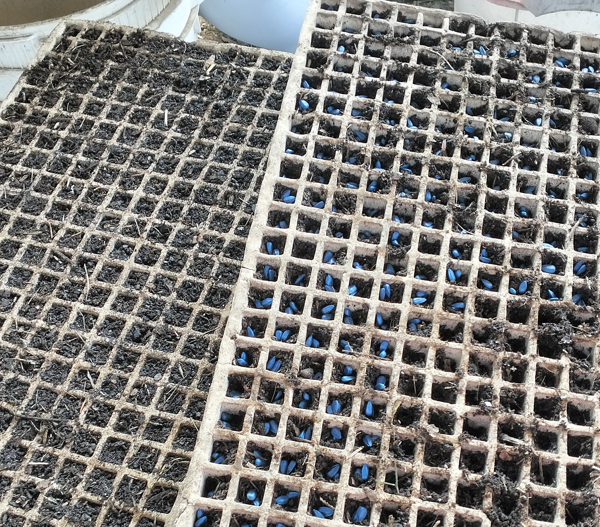
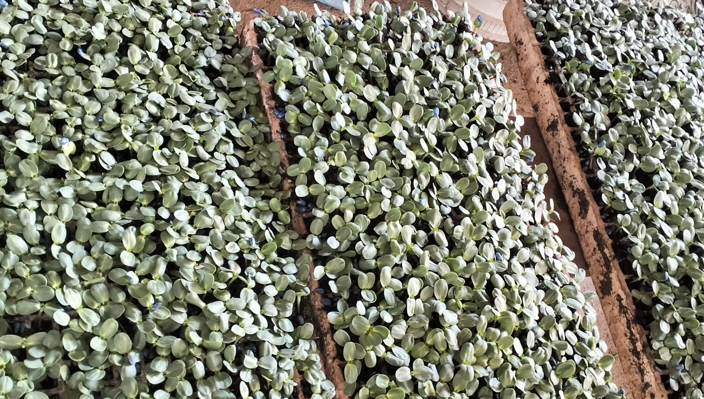
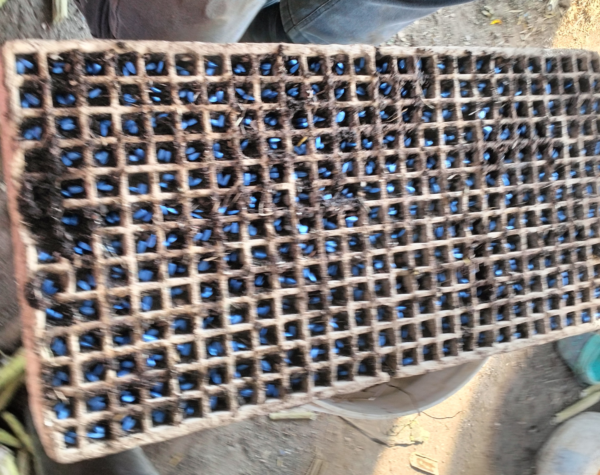
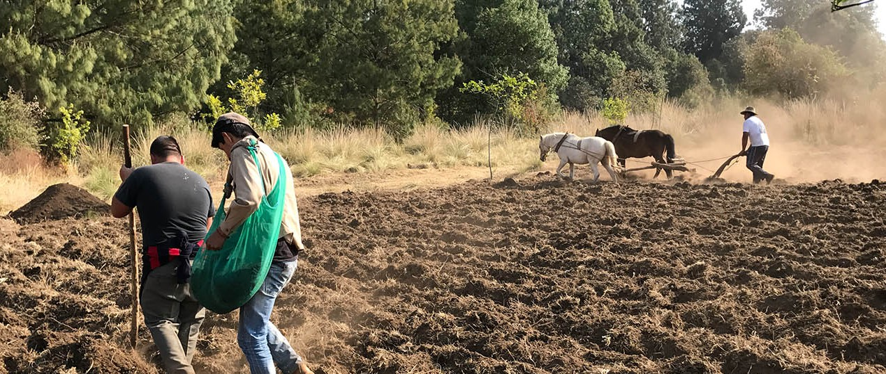
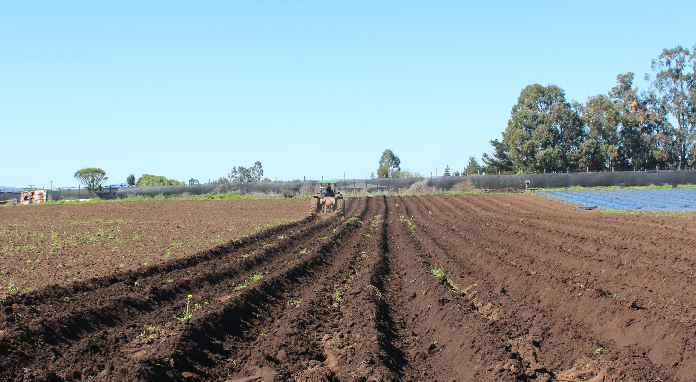
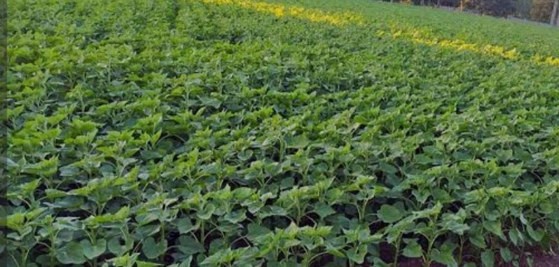
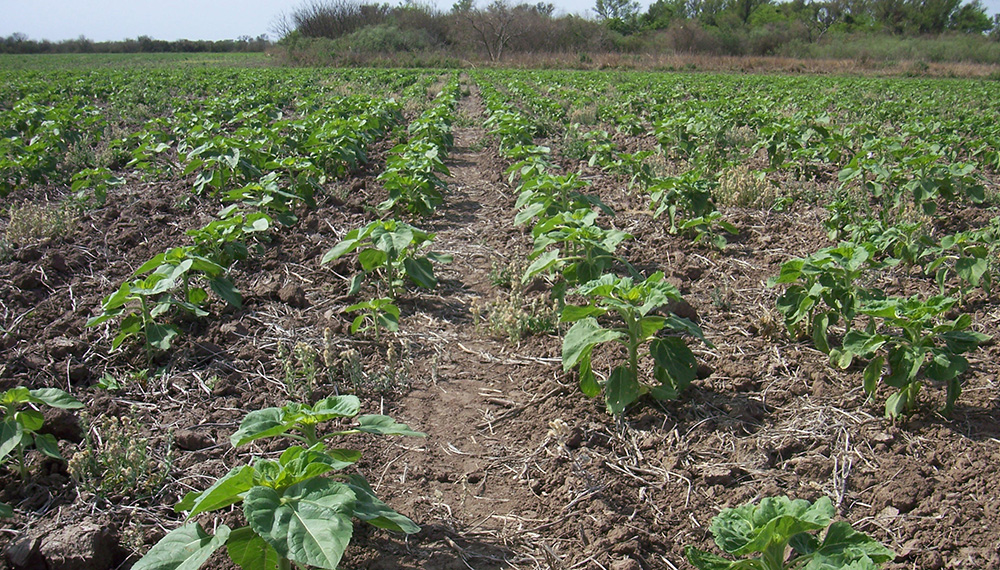
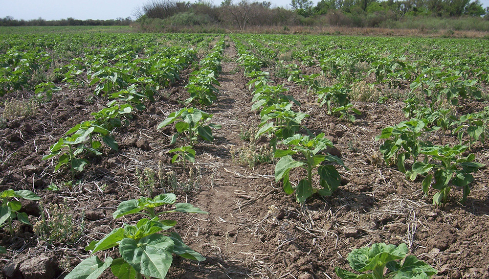

Prueba de mi Examen Autoria:Maria Fernanda Gomez Bartolo

Cultivo de Girasol:Siembra, manejo y venta...
El Girasol
Es una planta herbeáca que produce una pequeña o grande flor de color amarilla, se da durante todo el año. Goza de una gran aceptación debido a su belleza y facilidad de cultivo en el campo. El cultivo del Girasol es cada vez más frecuente en las explotaciones agrícolas. Su adaptabilidad a la climatología, buenos rendimientos y su opción como especie para la rotación de cultivos. Sembrar girasol en casa, en el huerto o incluso una simple maceta puede transformar tu espacio exterior y llenar tu vida de color.
El girasol es un cultivo que se adapta muy bien a las condicciones climaticas cambiantes de las estaciones, es capaz de extraer la humedad junto también los nutrientes para el suelo. Una siembra adecuada ayuda a los girasoles a tener un mejor crecimiento y una cosecha en buen estado.
Descubre cómo sembrar girasoles con los pasos nesesarios desde la elección de la variedad, hasta los cuidados más prácticos según el clima, el riego, la cosecha y la prevención de plagas.
1. Preparación de la semilla.
Las semillas de girasol se pueden germinar para producir una fuente saludable de nutrientes. La germinación adecuada depende de una variedad de factores: temperatura, volumen de agua y tiempo. Los siguientes pasos te guiarán a lo largo del simple proceso de cómo germinar semillas de girasol.
La siembra se realizó en bandeja de 128 alvéolos, el sustrato que se utiliza puede ser composta o nutritierra. A los 8 días después de ser sembrada la semilla, es el momento de verificar si la planta ya ha desarrollado 2-4 hojas verdaderas y la raíz con una longitud de 4 cm considera optima, para realizar trasplante para llevarlas a trasplantar al terreno o en un espacio adecuado.
Se tendra que regar la bandeja todas las mañanas o en las tardes todos los dias durante 15 dias el periodo que tarda su germinación de la semilla, es lo normalmente que la germinación de la planta pueda variar en el tiempo indicado, ya dependera de la temperatura del ambiente donde se encuentra la planta. Es una de donde se puede ver las desventajas del clima.
  
2. Preparacion del terreno para plantar la planta del girasol.
El proceso de preparación del suelo para sembrar girasoles es fundamental para asegurar un buen crecimiento y desarrollo de las plantas. Para ello se deben seguir ciertos pasos que garantizarán condiciones óptimas para su germinación y desarrollo.
En primer lugar, es importante realizar una adecuada limpieza del terreno. Se deben retirar cualquier tipo de maleza, piedras y restos de cultivos anteriores que puedan obstaculizar el crecimiento de los girasoles. Esto se puede hacer manualmente o utilizando herramientas como rastrillos o palas, asegurando dejar una superficie limpia y despejada.
Para empezar hacer los surcos se va a necesitar de una yunta o como normalmente es un caballo con el arado para asi con su ayuda facilita mas rapido el trabajo para hacer los surcos. Se recomienda dejar una distancia adecuada entre las plantas para permitir un buen desarrollo de las raíces y evitar la competencia por nutrientes. Una vez ya haber terminado de hacer los surcos sera necesario de hacer un riego para asi que cuando se planten las plantas de girasol este humeda la tierra y no se sequen.
La preparación del suelo para sembrar girasoles requiere de una limpieza adecuada. Se deben plantar a una profundidad de aproximadamente 2-3 centímetros y con una separación de 30-45 centímetros entre cada planta para que la raiz de la planta de un espacio adecuado y no se tope con otra planta.
Además, la tierra debe tener un buen drenaje. Los girasoles no toleran el encharcamiento, por lo que es importante que el agua pueda fluir correctamente y no se acumule en exceso. Un suelo bien drenado permitirá que las raíces de los girasoles respiren adecuadamente y evite problemas de pudrición.
  
3. Cuidados especiales para la planta.
Protege las plantas de las plagas. A los pájaros, las ardillas y los caracoles les encantan las semillas de girasol y podrían sacarlas incluso antes de que surjan los brotes. Cubre el suelo con mallas para impedir que eso suceda sin necesidad de bloquear los brotes. Coloca un cebo para caracoles o repelente de caracoles en un círculo con el fin de formar una barrera alrededor de la zona de plantación.
Aplica fertilizantes con moderación o no apliques ninguno. Si estás cultivando girasoles para tu disfrute personal, no es recomendable la fertilización, ya que se desarrollan bien sin esta y pueden sufrir si los alimentas en exceso. Si estás tratando de cultivar girasoles bastante grandes o cultivarlos como una cosecha, diluye el fertilizante en agua y viértelo en un "foso" alrededor de la planta, lejos de la base. Probablemente las mejores opciones son los fertilizantes balanceados o enriquecidos con nitrógeno.
El cultivo del girasol puede verse afectado por diferentes amenazas:
- Plagas: pájaros, caracoles, babosas y pulgones. La rotación de cultivos y el uso de trampas y espantapájaros suele ser suficiente en pequeños huertos.
- Enfermedades fúngicas: la roya negra, el mildiú velloso, el moho gris, el cancro del tallo y la pudrición blanca son los principales problemas. Para prevenirlas, usa acolchados, siembra en suelos bien aireados y no abuses del riego por aspersión.
.jpg)
.jpg) 

Después, en solo 3 meses la planta habrá alcanzado su estado de madurez y su tamaño final y podrá ser cosechada para asi realizar su venta.
¡Bienvenidos a Cultivo G! |
Donde nos Ubicamos | Para mas informacion | |
|---|---|---|---|
Nos complace abrir nuestras puertas y compartir contigo esta nueva aventura. Somos un negocio comprometido a cultivar de la mejor calidad y de manera productiva la planta de los girasoles. Donde cada esfuerzo es un gran logro para nuestros tranajadores que se comprometen. |
Nuestra Ubicacion es en la comunidad de Polvillos, Amanalco en el Estado de Mexico. Nos encontramos a unos metros de la salida de la Autopista de Toluca-Valle de Bravo. | Te proporcionamos nueros de telefono para culquier informacion para la compra de girasoles Telefono 7291987659 Telefono 7204387697
|
|
 |
|||